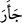
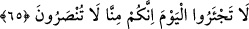
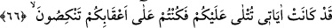
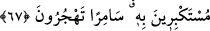
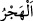

Râğıb der ki: “
” ceylan ve benzeri yâbânî hayvanların böğürmesine benzer şekilde
duâ ve yalvarmada ileri gitti, demektir.”
Azab ile yakalamak ve ânîden feryâdı basmak başkalarını da içine aldığı halde refah
ve bolluk içinde olan kimselere tahsis edilmesi, onların durumunu en iyi şekilde
aksettirdiği içindir. Yine onların bu korkunç hâli ile karşılaşmaları sâbit ve vâki
olduğuna göre onlardan aşağı ve onların hizmetçisi olanların durumunu düşünmek
gerekir.
Bazıları der ki: Azâba uğratılan refah ve bolluk içerisindeki kimselerden maksad,
Bedir’de öldürülen Ebû Cehil ve arkadaşlarıdır. Onlar Mekkeliler’e feryad edip
yardım istiyorlardı. Ya da bunlardan maksad, mutlak olarak kâfirlerdir.
65. Boşuna sızlanmayın bugün! Zira, bizden yardım göremeyeceksiniz!
Onlara şöyle denir: “Boşuna sızlanmayın bugün!” Kıyâmet gününü ifâde eden
“bugün” kelimesinin özellikle zikredilmesi, o günden onları korkutmak ve onlara feryad
edip sızlanma vaktini geçirdiklerini bildirmek içindir.
“Zira, bizden yardım göremeyeceksiniz!” Yani beklemediğiniz bir anda gelip çatan bu
şeyden sizi kurtaracak bizim tarafımızdan bir yardım size ulaşmayacaktır.
66-67. Çünkü âyetlerim size okunurdu da, siz, buna karşı kibirlenerek arkanızı
döner, geceleyin (Kâbe’nin etrafında toplanarak) hezeyanlar savururdunuz.
“Çünkü” faydalanmanız için dünyada “âyetlerim size okunurdu da, siz buna karşı
kibirlenerek” ‘âyetlerim’ diye ifâde edilen kitabımı yalanlayarak -çünkü kibirlenme
yalanlama mânâsını da içerir- “arkanızı döner,” yâni onları tasdik etmek ve onlarla
amel etmek bir yana onları dinlemekten şiddetle yüz çevirir “geceleyin” Kâbe’nin
etrafında toplanarak Kur’an hakkında “hezeyanlar savururdunuz.” Veya onu terk
ederdiniz. Çünkü “
” hezeyan veya terk etmek mânâsınadır.
Onlar geceleyin Kâbe’nin etrafında toplanıyor, gece vakti Kur’an’dan bahsediyor ve
ona dil uzatıyorlardı. Gece toplantılarının tamamını Kur’ân’ı dillerine dolayarak, onu
sihir ve şiir diye adlandırarak geçiriyorlardı.
Âyette Allah Teâlâ’ya tâat dışında geceyi sohbetle geçirmek yerilmektedir.
Peygamberimiz (a.s.) yatsı namazını gecenin ilk üçte birine kadar geciktirir, yatsıyı